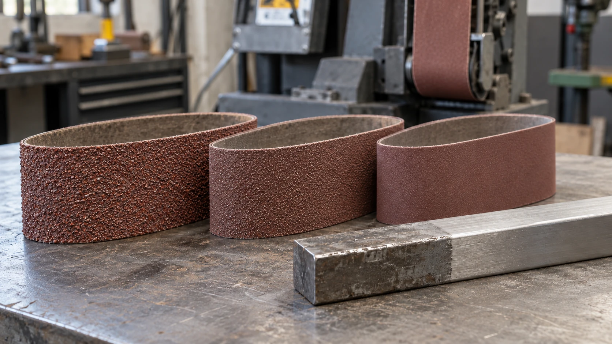

A granulação influencia a quantidade de material removida e o padrão de riscos deixado pela lixa. Na mesma escala de classificação, números menores representam grãos mais grossos; números maiores representam grãos mais finos.
A escolha começa pelo objetivo do trabalho: remover bastante material, preparar a superfície ou refinar o acabamento.
Grãos grossos para remoção
Granulações grossas podem ser utilizadas para remover rebarbas, corrigir irregularidades e dar forma à peça, desde que o abrasivo e a máquina sejam adequados.
Elas tendem a deixar riscos mais profundos. Começar com uma lixa excessivamente grossa pode aumentar o trabalho necessário nas etapas seguintes.
Grãos intermediários para preparação
As granulações intermediárias ajudam a reduzir as marcas do desbaste e a uniformizar a superfície.
Essa etapa é importante porque uma lixa muito fina pode demorar para remover os riscos profundos deixados anteriormente.
Grãos finos para refino
As granulações finas são utilizadas para reduzir o padrão de riscos e preparar a peça para o acabamento desejado.
O ponto de parada muda conforme o material e a etapa seguinte. Uma peça destinada à pintura, uma madeira que receberá acabamento e uma lâmina que será polida não precisam necessariamente da mesma sequência.
Uma referência inicial
| Granulação FEPA P | Possível papel no processo |
|---|---|
| P24 e P36 | Remoção intensa e desbaste pesado |
| P40 e P60 | Desbaste e conformação |
| P80 a P120 | Preparação e redução de marcas |
| P150 a P240 | Acabamento e uniformização |
| P320 a P600 | Refino e preparação para etapas posteriores |
As faixas são orientativas. Uma granulação pode desempenhar funções diferentes conforme o material, o abrasivo e a máquina.
Como montar uma sequência
Uma sequência possível para avaliação é P80 → P120 → P180 → P240. Ela não é uma receita para todos os trabalhos.
Antes de avançar, confira se os riscos da etapa anterior foram removidos. Se ainda estiverem presentes, a próxima lixa poderá apenas suavizar a superfície ao redor deles.
Evite saltos grandes sem testar o resultado. Eles podem aumentar o tempo de lixamento e o consumo do abrasivo fino.
O mesmo grão sempre deixa o mesmo acabamento?
O tipo de abrasivo, a flexibilidade do costado, a pressão, a velocidade e o estado da cinta também interferem. Além disso, diferentes escalas de classificação não são necessariamente equivalentes, principalmente nos grãos finos.
Fale com a Robusta
Para escolher suas cintas na Robusta, informe o material, o estado inicial da superfície e o acabamento pretendido. Isso ajuda a definir uma sequência coerente com o seu processo.
Conversar pelo WhatsApp